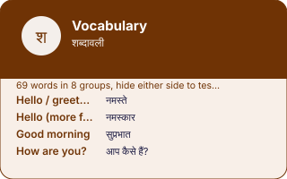

EkGuru › Learn Hindi › Tools › Vocabulary builder
Hindi vocabulary by situation
🔊 Tap any speaker button to hear Hindi spoken. Too fast or slow? Use the speed button at the bottom-right of the page.
69 words and phrases grouped the way you will actually need them — greetings, courtesy, survival, travel, food, family, feelings. Pick a group, learn it, use it the same week.
69 entries
| English | Hindi | Sounds like | Note |
|---|---|---|---|
| Hello / greetings | नमस्ते | namaste | Neutral and safe with anyone. Not used between close friends, who mostly just say hi or the person's name. |
| Hello (more formal) | नमस्कार | namaskaar | A shade more formal than namaste. Common on television and in speeches. |
| Good morning | सुप्रभात | suprabhaat | Written and formal. In actual speech most people say namaste, or Good morning in English. |
| How are you? | आप कैसे हैं? | aap kaise hain | To a woman: आप कैसी हैं? (aap kaisi hain). The adjective agrees with the person you are addressing. |
| How are you? (informal) | तुम कैसे हो? | tum kaise ho | For friends and people younger than you. Using it with a stranger sounds abrupt. |
| I am fine | मैं ठीक हूँ | main theek hoon | |
| And you? | और आप? | aur aap | |
| Goodbye | अलविदा | alvida | Heavier than English goodbye — it carries a sense of parting for a long time. Day to day, people say namaste again, or फिर मिलेंगे. |
| See you later | फिर मिलेंगे | phir milenge | we will meet again |
| Good night | शुभ रात्रि | shubh raatri | Formal. Good night in English is extremely common in speech. |
| Thank you | धन्यवाद | dhanyavaad | Formal and sincere. Between friends and family Hindi often uses no thank-you at all; that is not rudeness, it is a different norm. |
| Thanks (Urdu-origin, very common) | शुक्रिया | shukriya | Lighter and warmer than dhanyavaad, and heard far more often in everyday speech. |
| Please | कृपया | kripaya | Formal and mostly written. In speech, politeness is carried by the verb ending — कीजिए rather than a separate word for please. |
| Sorry / excuse me | माफ़ कीजिए | maaf keejiye | forgive (me) |
| No problem | कोई बात नहीं | koi baat nahin | no matter at all |
| Yes | हाँ | haan | |
| Yes (polite) | जी हाँ | jee haan | जी is a respect particle. Adding it turns a blunt yes into a courteous one. |
| No | नहीं | nahin | |
| No (polite) | जी नहीं | jee nahin | |
| Okay / I see | अच्छा | achchha | Also means good. As a response its meaning shifts with tone: agreement, mild surprise, or is that so. |
| My name is … | मेरा नाम … है | mera naam … hai | |
| What is your name? | आपका नाम क्या है? | aapka naam kya hai | |
| I am from … | मैं … से हूँ | main … se hoon | |
| Where are you from? | आप कहाँ से हैं? | aap kahaan se hain | |
| Nice to meet you | आपसे मिलकर अच्छा लगा | aapse milkar achchha laga | |
| I am learning Hindi | मैं हिंदी सीख रहा हूँ | main hindi seekh raha hoon | A woman says सीख रही हूँ (seekh rahi hoon). Hindi verbs agree with the speaker's gender. |
| I speak a little Hindi | मैं थोड़ी हिंदी बोलता हूँ | main thodi hindi bolta hoon | A woman says बोलती हूँ (bolti hoon). |
| I don't understand | मुझे समझ नहीं आया | mujhe samajh nahin aaya | |
| Please speak slowly | ज़रा धीरे बोलिए | zara dheere boliye | |
| Say it again, please | फिर से कहिए | phir se kahiye | |
| Do you speak English? | क्या आप अंग्रेज़ी बोलते हैं? | kya aap angrezi bolte hain | |
| What does this mean? | इसका क्या मतलब है? | iska kya matlab hai | |
| How do you say this in Hindi? | इसे हिंदी में क्या कहते हैं? | ise hindi mein kya kehte hain | |
| Help! | मदद कीजिए! | madad keejiye | |
| I need a doctor | मुझे डॉक्टर चाहिए | mujhe doctor chahiye | |
| Where is the toilet? | बाथरूम कहाँ है? | bathroom kahaan hai | बाथरूम is the word people actually use, borrowed from English. शौचालय exists but is signage Hindi. |
| How much is this? | यह कितने का है? | yeh kitne ka hai | |
| That's too expensive | यह बहुत महँगा है | yeh bahut mehanga hai | |
| Please reduce the price a little | थोड़ा कम कीजिए | thoda kam keejiye | |
| Where is …? | … कहाँ है? | … kahaan hai | |
| Go straight | सीधे जाइए | seedhe jaaiye | |
| Turn left | बाएँ मुड़िए | baayen mudiye | |
| Turn right | दाएँ मुड़िए | daayen mudiye | |
| Stop here | यहीं रोकिए | yaheen rokiye | |
| How far is it? | कितनी दूर है? | kitni door hai | |
| I want to go to … | मुझे … जाना है | mujhe … jaana hai | |
| Please use the meter | मीटर से चलिए | meter se chaliye | Standard and expected in an auto-rickshaw. Saying it first, calmly, changes the negotiation. |
| I am hungry | मुझे भूख लगी है | mujhe bhookh lagi hai | hunger has attached to me |
| I am thirsty | मुझे प्यास लगी है | mujhe pyaas lagi hai | |
| Water, please | पानी दीजिए | paani deejiye | |
| Not spicy, please | तीखा मत बनाइए | teekha mat banaaiye | तीखा is chilli-hot. मसालेदार means well-spiced, which is not the same thing and is usually what you do want. |
| I am vegetarian | मैं शाकाहारी हूँ | main shaakaahaari hoon | |
| It is delicious | बहुत स्वादिष्ट है | bahut svaadisht hai | |
| The bill, please | बिल दीजिए | bill deejiye | |
| I have eaten enough | बस, बहुत हो गया | bas, bahut ho gaya | Useful and often necessary. Refusing more food once is treated as politeness rather than a real answer. |
| Mother | माँ | maa | |
| Father | पिता | pita | पापा (papa) is what people actually call their father. |
| Elder brother | भाई | bhai | बड़ा भाई for elder specifically. Also used for any man of similar age, affectionately. |
| Elder sister | दीदी | didi | Widely used for any older woman you are friendly with, not only a sister. |
| Son | बेटा | beta | |
| Daughter | बेटी | beti | |
| Wife | पत्नी | patni | |
| Husband | पति | pati | |
| Friend | दोस्त | dost | |
| I like it | मुझे पसंद है | mujhe pasand hai | to me it is pleasing — the thing is the subject, not you |
| I love you | मैं तुमसे प्यार करता हूँ | main tumse pyaar karta hoon | A woman says करती हूँ (karti hoon). This is the film version; in real life people more often say it in English or not at all. |
| I am happy | मैं ख़ुश हूँ | main khush hoon | |
| I am tired | मैं थक गया हूँ | main thak gaya hoon | A woman: थक गई हूँ (thak gayi hoon). |
| Don't worry | चिंता मत कीजिए | chinta mat keejiye |
How to actually build vocabulary
Frequency beats interest. The first two hundred words of Hindi carry a startling share of ordinary conversation. Learn those before the word for "pomegranate", however much more interesting it is.
Always with the gender. Every Hindi noun is masculine or feminine and the verb agrees. Store यह किताब अच्छी है, not किताब — the phrase carries the gender and you practise the agreement at the same time.
Say it out loud. Silent review builds recognition. Only speech builds speech, and recognition is the less useful of the two by a wide margin.
The free words you may already have
Hindi absorbed a large Persian and Arabic layer and a large English one. If you speak Persian, Turkish, Indonesian, Malay, Swahili, Thai or Tamil, you already half-recognise a few hundred Hindi words through shared Sanskrit, Persian or Arabic contact — किताब, दुनिया, वक़्त, दोस्त and many more. Most learners never find out.
Devanagari is easy to get slightly wrong when it is typed by hand — a missing matra, the wrong nukta. If something here looks off to you, trust a native speaker over this page and please tell us so it gets fixed — it takes a moment and a real person reads it. Romanised spellings are a guide to the sound, not a standard: there is no single official way to write Hindi in Latin letters.
Questions
Ten to twenty new ones is plenty and five is fine. The number that decides whether you learn Hindi is not how many you add today but whether you come back tomorrow.
Phrases, mostly. A bare noun teaches you a translation; a short sentence teaches you the word doing its job, including its gender and the postposition it takes — and in Hindi the gender is not optional information.
Because that is how you will need them. Learning fifty random nouns gives you fifty nouns; learning the twenty that appear in a shop gives you the ability to shop.
Reading gets you the grammar. Speaking is the part that only happens with another human. EkGuru tutors are native Hindi speakers in India who teach one to one over video — no group classes, no subscription.
Find a Hindi Guru Free Hindi guidesNext
Vocabulary, in one picture
Every number and every word on this plate is taken from the tool below it, not drawn by hand: what you see here is what the tool holds.
